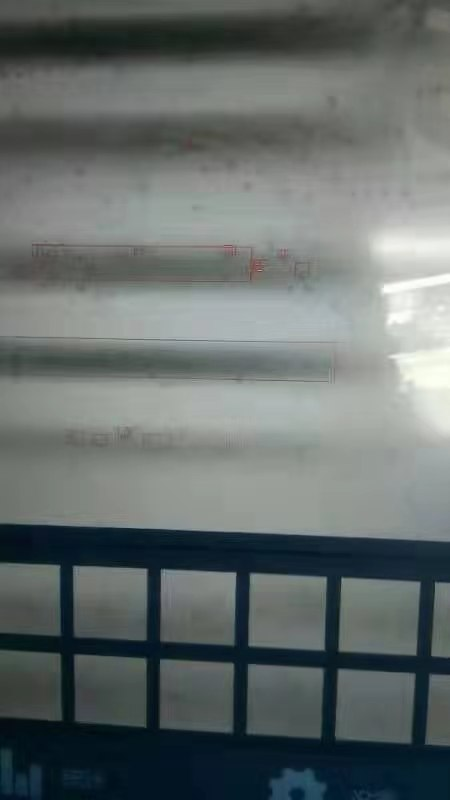
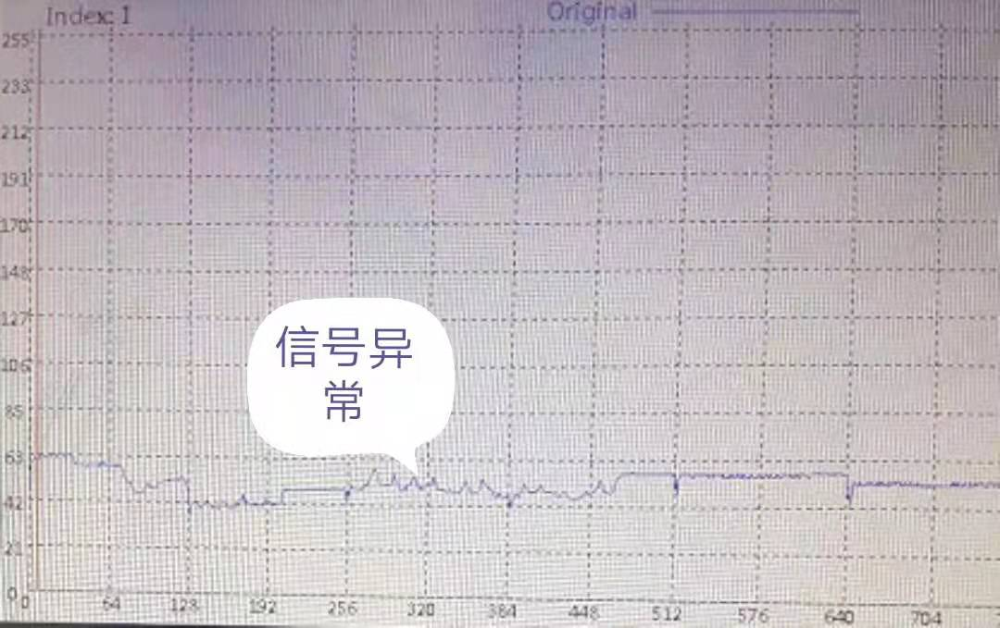
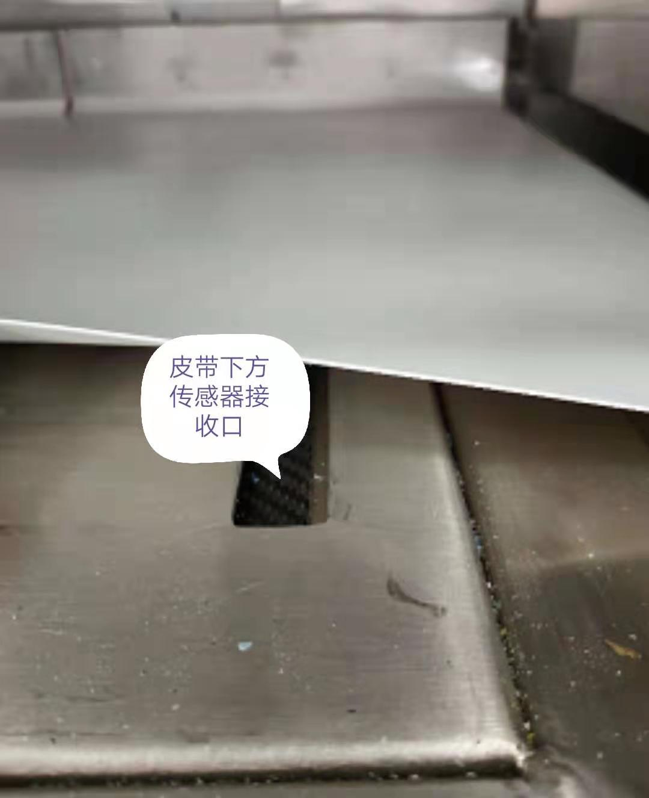
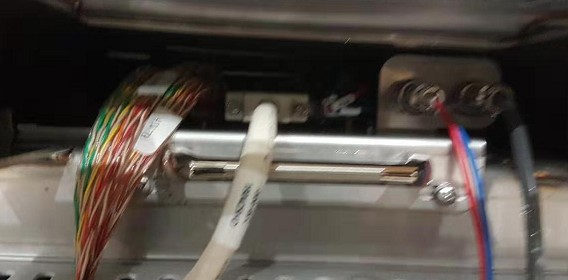
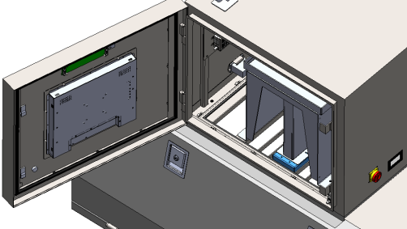
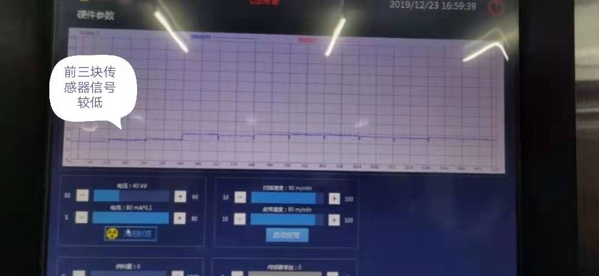
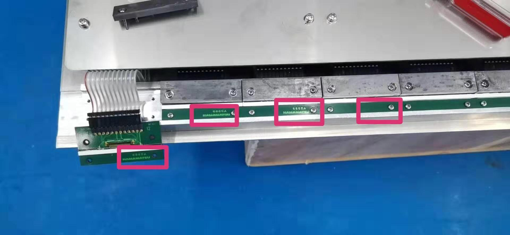
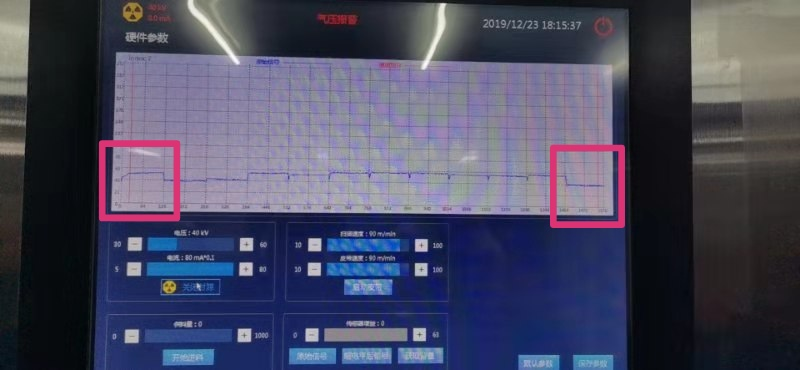

情况一：开启检测时图像上黑白相间如何解决？如下图：

解决方法：检查下射源下方狭缝铅块固定镙丝是否牢固，设备检测时由于皮带转动，设备会产生振动，导致没有固定牢固的狭缝铅块抖动，射线就不能照射到下方的传感器导致图像忽明忽暗。
情况二：开启射源时原始波形异常如何解决？如下图：

解决方法：（1）先检查皮带及皮带下方传感器接收口是否有异物卡在此处，如下图：

（2）若清理后无效，再将系统底板从槽中抽出（如下图）观察原始信号波形被干扰的长度是否缩短了，若渐渐抽出后干扰波形缩短了则问题属于射源发射口机械部分遮挡，反之则是系统底板上传感器有问题。

（3）打开前门，拆除图示蓝色标记部分的外挂束光筒零件，然后重新开机检查信号是否正常；若拆除零件后，图像正常，则可能是外挂束光筒变形或者安装位置偏移导致；若图像问题仍然存在，则进行下面第四部排查。

（4）打开上电气箱门，并拆除前侧射源底座挡板，检查图示蓝色标记部分限光块支架零件的中心内刻线是否与箱体底部标记的中心线对齐；若上下中心线未对齐，请调整蓝色标记的限光块支架零件位置对齐，然后重新开机检查图像信号；若上下中心线已经对齐，请左右微调蓝色标记的限光块支架零件位置，并检查图像信号是否有变化和改善；

情况三：开启射源时原始信号有几个波形较低时问题如何解决？如下图：

解决方法：如果在检查射源下方狭缝铅块是否左右偏移未解决上图问题后（解决方法如情况二），则进行如下图的操作

（1）打开后门，将系统底板上的线束拆下，抽出系统底板，观察如上图红色框子显示的传感器版本是否一致，若不一致则信号高低问题是由于传感器版本问题造成的，若传感器版本一致，则进行如下图的操作

（2）如上图所示，把信号较低与信号较高的传感器对调位置后，打开射源观察原始波形是否位置也进行对调，则说明该问题是由于个别传感器的感光度不一致导致的，具体更不更换取决于软件参数调试后喷阀是否吹背景导致效果有影响。
如以上方法均无法解决，可以企业微信联系丁剑或机械工程师马金鑫。